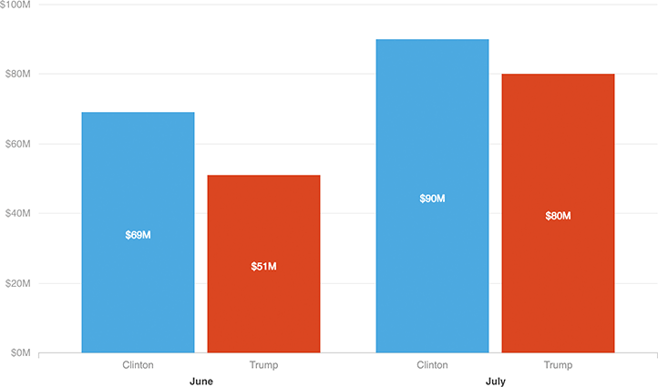

Trump Closes The Fundraising Gap
Donald Trump’s campaign, along with its joint fundraising committees, raised $80 million for Trump and the RNC in July. That’s roughly $10 million less than Clinton’s campaign and committees raised, a smaller gap than the nearly $20-million difference in June.
